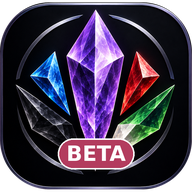

Salt Mine Beta
Setup check,
This page tests each piece the new app depends on. Once everything here shows a check mark, the foundation is ready for Phase 1. The classic Salt Mine isn't affected by anything on this page.
App loaded
Sign in with Google
Tap the button. On an iPhone or iPad, also try this after adding the page to your home screen.
Your private data
Runs after you sign in: saves a test note to your account, reads it back, and makes sure other people's data is off limits.